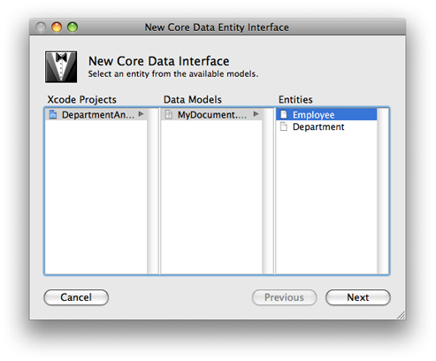
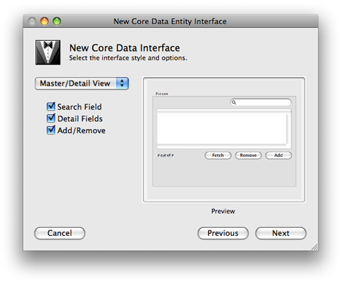
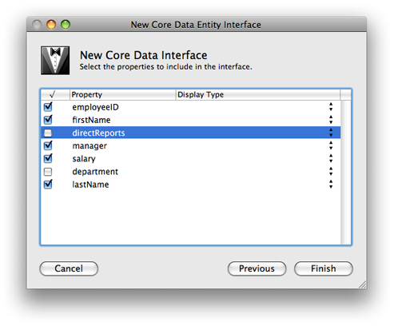

Creating the Project, Model, and Interface
This part of the tutorial guides you through building the Department and Employees application and in the process teaches you the steps essential to building a Cocoa application using Core Data and NSPersistentDocument.
In this section:
Create a New Project
Create the Data Model
Create the User Interface
Set the File Extension and Type
Build and Test
What Happened?
Create a New Project
Core Data is integrated into the Cocoa framework, so any Cocoa application can use it. The Employees and Departments application you’ll build is a Core Data document-based application. Follow these steps to create the initial project:
-
Choose New Project from the File menu.
-
Select Core Data Document-based Application with Spotlight Importer in Xcode’s project Assistant window, and press Next.
-
Enter the project name (for example, “DepartmentAndEmployees”) and a destination folder for the project.
-
This project uses garbage collection (see Garbage Collection Programming Guide), so in the project build settings make garbage collection required (see Garbage Collection for Cocoa Essentials).
Create the Data Model
When you start to develop a Cocoa application, you often begin by prototyping the application’s user interface. If you use Core Data, however, your first step is typically to create a data model (or schema) that describes the entities that you will use in your application. Core Data uses the model to help you quickly build full-featured prototypes.
Xcode has a data modeling tool that you use to define the schema for your application, as shown in Figure 2-1. The tool itself is described in Xcode Tools for Core Data. If you do not know how to use the tool, consult Creating a Managed Object Model with Xcode , which describes how to create a data model.
After creating the project, open MyDocument.xcdatamodel in the modeling tool by selecting its icon in the project Models folder. Use the tool to define two entities, Employee and Department as specified in Table 2-1 through Table 2-4. The diagram for the finished model should look like that shown in Figure 2-2.
There are other aspects of the schema that are not described in the tables:
-
The class for both entities is
NSManagedObject; neither entity is abstract. -
None of the properties is transient.
-
Employee has a reciprocal relationship—a relationship to itself—that defines the manager-reports relationship.
-
For this part of the tutorial, the Employee’s department relationship is optional.
-
The delete rule for all relationships is Nullify.
-
The minimum value for the Employee salary attribute is 0.
|
Name |
Type |
Optional |
Default value |
Indexed |
|---|---|---|---|---|
|
firstName |
String |
NO |
First |
Yes |
|
lastName |
String |
NO |
Last |
Yes |
|
employeeID |
int 32 |
YES |
0 |
No |
|
salary |
Decimal |
YES |
0 |
No |
|
Name |
Destination |
To-many |
Optional |
Inverse |
|---|---|---|---|---|
|
department |
Department |
NO |
YES |
employees |
|
manager |
Employee |
NO |
YES |
directReports |
|
directReports |
Employee |
YES |
YES |
manager |
|
Name |
Type |
Optional |
Default value |
Indexed |
|---|---|---|---|---|
|
name |
String |
NO |
Department |
No |
|
budget |
Decimal |
YES |
0 |
No |
|
Name |
Destination |
To-many |
Optional |
Inverse |
|---|---|---|---|---|
|
employees |
Employee |
YES |
YES |
department |
Note that the relationships are all modeled in both directions. It is important that you do this to ensure the integrity of the object graph (so that Core Data can keep the relationships synchronized—see Relationships and Fetched Properties in Core Data Programming Guide).
Create the User Interface
Now that the data model is complete, you can create the user interface. In fact, you can use the model to create a user interface quickly. This provides a useful strategy for testing a model—you can create an application very quickly with little effort and use it to exercise the model.
Open MyDocument.nib in Interface Builder. First remove the “Your document contents here” text field from the document window, then follow these steps:
-
Ensure that you can see the user interface window.
-
In the Library, find the Core Data Entity. Drag the entity icon over the document window, as shown in Figure 2-3.
-
When you release the mouse, you are presented with the New Core Data Interface panel, which lists the currently-open Xcode projects and their associated data models. From your project, select the MyDocument model, then select the Employee entity, and finally press Next.
 -
With the next panel, you choose the interface style. Select the Master/Detail view with Search field, Detail fields, and Add and Remove buttons, then press Next.
 -
In the next panel, you choose which Employee properties you want to be displayed in the user interface. Choose all except
departmentanddirectReports, then press Finish. -
Interface Builder automatically creates a user interface, as illustrated in Figure 2-4. The interface contains a table view, search field, text fields for individual attributes, pop-up menu for Manager, and buttons to add, remove, and fetch employees. Interface Builder also adds array controllers to the nib file to manage the entities.
-
Interface Builder actually does more than is required for this tutorial. Delete the Employee ID, Salary, and Manager columns in the table view (and, if you wish, the Fetch button since it won’t be used). You can also rearrange the user interface if you want; for example, you could put the first name and last name text fields next to each other.
-
Save the nib file.
You should take some time to investigate both the connections in the nib file and the behavior of the application. The user interface is created almost entirely using bindings. In particular you should note:
-
The array controllers’
managedObjectContextbinding is bound to the File’s Owner’smanagedObjectContext(see the Bindings pane of theNSArrayControllerInspector). -
The array controllers are set to manage an entity, not a class (see the Attributes pane of the Inspector).
-
The search field has been populated with a number of predicates—one for each attribute, and an additional one to search all attributes.
-
There are two array controllers to manage collections of Employees—one for the table view, and one for the pop-up menu.
Set the File Extension and Type
Core Data supports several types of data store—XML, SQLite, and binary, as well as your own custom store type. Each has their own advantages and disadvantages. XML, for example, is (to an extent) human-readable, which may be particularly useful during the early stages of development when you want to ensure that data you expected to be saved to a file has in fact been stored. The XML store, however, is verbose and comparatively slow. The SQLite store is smaller and more efficient. In particular, it has the unique advantage that its entire contents do not have to be read into memory when it is opened.
By default, the project is configured with three document types, one for each native Core Data persistent store type. You change these in Xcode using the Properties pane in the Target Info window as illustrated in Figure 2-5. You set the extension as you would for any other document in a Cocoa document-based application and select the desired store type from the pop-up menu in the Store Type menu. Typically SQLite represents the best choice for a deployed application.
Spotlight metadata importers are associated with document types by specifying the uniform type identifiers (UTIs—see Uniform Type Identifiers Overview) that they can extract data from (see Extracting Metadata from Documents). If you plan to write a custom importer you should therefore specify a suitable UTI for your document type.
You should also then add a UTI exported type declaration to the Info.plist file. You can use Xcode’s plist editor, or open the Info.plist file as a plain text file and add XML elements as described below:
Using the plist editor:
Exported Type UTIs (1 item)
Conforms to UTIs
public.data
Description
SQLite file format for DepartmentAndEmployees application
Identifier
com.apple.techPubs.DepartmentAndEmployees
Equivalent Types (1 item)
public.filename-extension
DepartmentAndEmployees
Editing the XML as plain text:
<key>UTExportedTypeDeclarations</key> |
<array> |
<dict> |
<key>UTTypeConformsTo</key> |
<array> |
<string>public.data</string> |
</array> |
<key>UTTypeDescription</key> |
<string>SQLite file format for DepartmentAndEmployees application</string> |
<key>UTTypeIdentifier</key> |
<string>com.apple.devpubs.DepartmentAndEmployees</string> |
<key>UTTypeTagSpecification</key> |
<dict> |
<key>public.filename-extension</key> |
<array> |
<string>DepartmentAndEmployees</string> |
</array> |
</dict> |
</dict> |
</array> |
Finally, since this application will run only on Mac OS X v10.5 and later, add a value for the minimum system version.
Using the plist editor:
Minimum system version
10.5
Editing the XML as plain text:
<key>LSMinimumSystemVersion</key> |
<string>10.5</string> |
Build and Test
You can now build and test your application. You should find that it is (almost) fully functional! You can add and remove employees, and edit their attributes. You can set an employee’s manager using the pop-up menu. The application supports undo and redo, the search field works, and you can save and open documents. If you make a mistake and enter, for example, a negative salary, then try to save the document, the application presents an alert.
And you haven’t written any code yet. . .
As you test the application, however, you may start to notice some problems. The popup menu displays only the employees’ first names. First, this may not be the best way of identifying a particular employee. Second, if more than one employee share the same name, it is impossible to distinguish between them.
There are several steps that are necessary to fix these problems, all of which require a custom class for the Employee entity—which in turn requires a change to the managed object model. Specifically, you need to do the following (the implementation of these steps is described in the next section).
-
In a custom class for the Employee entity, define a custom method to return a unique derived property—a string that contains the employee’s full name and employee ID.
-
Implement the relevant key-value observing method to ensure that the derived property is updated when any of its components is changed.
-
Implement a method to set a new employee ID when a new employee is created.
What Happened?
The title “Creating the Project, Model, and Interface” is somewhat misleading. More than just “creating the project,” in a very few steps you have completed the main task goals. In the next chapters you will refine the implementation and provide additional user-friendly behavior. Now, though, it is worth briefly reviewing what has happened.
The example so far illustrates the focus of Core Data. Your primary task has been to specify the data model in your application. The Core Data framework (in conjunction with Cocoa bindings for the user interface) has provided the infrastructure to support most of the other required behaviors.
Most of the Core Data infrastructure is hidden by the persistent document. NSPersistentDocument implements a number of methods to support integration with Core Data. From the perspective of the typical developer, the most important method is managedObjectContext. The managed object context serves as the gateway to the rest of the Core Data infrastructure. It also provides the document’s undo manager. NSPersistentDocument takes care of creating and setting the type of the persistent store, saving and loading data, and configuring the Core Data stack. For many applications you do not need to customize its behavior further. Later in this tutorial, however, you will override some of NSPersistentDocument's methods to customize the store.
© 2005, 2009 Apple Inc. All Rights Reserved. (Last updated: 2009-02-04)